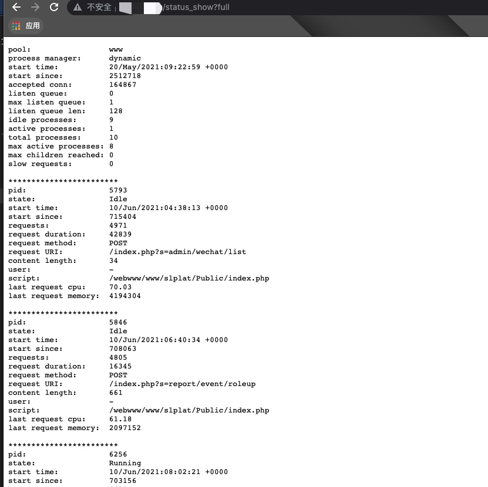

之前的都是多个域名，现在打算采用分离的形式
fpm模式
server {
index index.html index.htm index.php;
root /webwww/www/landpage/Public/dist;
server_name landpage.xx.com;
listen 443;
listen 80;
ssl on;
ssl_certificate /webwww/ssl/1_.cn_bundle.crt;
ssl_certificate_key /webwww/ssl/2_.cn.key;
ssl_session_timeout 5m;
ssl_protocols TLSv1 TLSv1.1 TLSv1.2; #按照这个协议配置
ssl_ciphers ECDHE-RSA-AES128-GCM-SHA256:HIGH:!aNULL:!MD5:!RC4:!DHE;#按照这个套件配置
ssl_prefer_server_ciphers on;
location / {
#alias /webwww/www/landpage/Public/dist; #项目路径
index index.html;
try_files $uri $uri/ /index.html;
}
location /api {
root /webwww/www/landpage/Public;
if (!-e $request_filename){
rewrite ^/(.*)$ /index.php?s=$1 last;
break;
}
try_files $uri $uri/ /index.php;
}
location ~ [^/]\.php(/|$) {
root /webwww/www/landpage/Public;
fastcgi_split_path_info ^(.+\.php)(/.+)$;
fastcgi_pass 172.17.0.7:9000;
fastcgi_index index.php;
include fastcgi_params;
fastcgi_param SCRIPT_FILENAME $document_root$fastcgi_script_name;
#fastcgi_param SCRIPT_FILENAME $request_filename;
fastcgi_param PATH_INFO $fastcgi_path_info;
}
}
nginx查看php-fpm状态
php-fpm需要配置一下
[www]
user = www-data
group = www-data
listen = 127.0.0.1:9000
pm = dynamic
pm.max_children = 20
pm.start_servers = 5
pm.min_spare_servers = 5
pm.max_spare_servers = 10
;pm.process_idle_timeout = 300
pm.max_requests = 10000
pm.status_path = /status_show
slowlog = /webwww/log/php-fpm-slow.log
nginx增加location
location ~^/status_show$ {
fastcgi_param SCRIPT_FILENAME $fastcgi_script_name;
include fastcgi_params;
fastcgi_pass 172.17.0.2:9000;
}
查看本域名/status_show?full即所有连接
/status_show还可以指定json、html和xml的方式显示

proxy模式
server {
listen 443;
listen 80;
ssl on;
ssl_certificate /webwww/ssl/1_.cn_bundle.crt;
ssl_certificate_key /webwww/ssl/2_.cn.key;
ssl_protocols TLSv1 TLSv1.1 TLSv1.2; #按照这个协议配置
server_name jumpuser.xxx.cn;
root /webwww/www/jumpuser/Public/dist;
location / {
index index.html;
try_files $uri $uri/ /index.html;
}
location /api {
proxy_pass http://172.19.0.2:8080;
proxy_http_version 1.1;
proxy_set_header X-Real-IP $remote_addr;
}
index index.html index;
}
以上配置都是访问/api开头走后台，默认其它路径走前端， 后端项目必须使用强路由的形式。